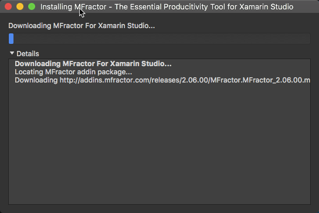
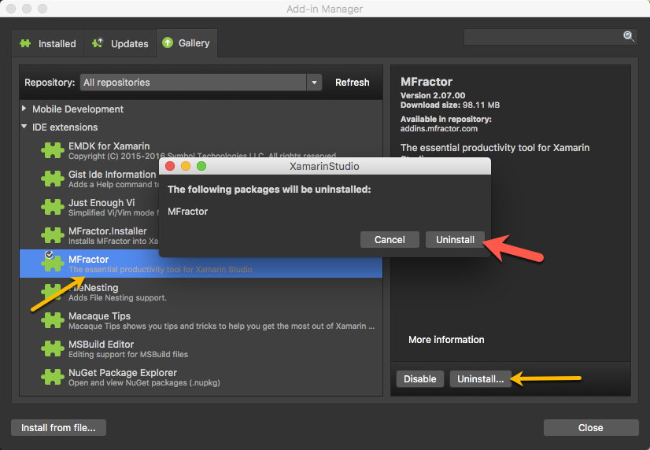

Introduction
In order to start using MFractor, we'll first want to install it.
This section outlines how we can install and activate MFractor after installation.
Additionally, we'll learn how to update and uninstall MFractor.
Install MFractor
The simplest way to install MFractor into Xamarin Studio is by using the MFractor.Installer helper addin.
This addin lives inside the Addin Manager in Xamarin Studio, under Gallery -> IDE extensions.
Open up Xamarin Studio and click on the Xamarin Studio then Addins...

Once the Addin Manager opens, click Gallery and under IDE extensions locate MFractor.Installer. If this isn't present, hit the Refresh button to update the Gallery listings.

Once you've located MFractor.Installer, left click on it to select it. In the right hand detail view, click Install. Xamarin Studio will prompt you for confirmation, click Install

You will then see a download dialog appear and MFractor will download and install!

Next we need to activate MFractor.
Activation
After installing MFractor, you'll need activate it using your email address.
First things first, close the Addin Manager. There is a known bug that blocks the email entry field from receiving keyboard when the Addin Manager is open. It's a pain and we are working on fixing this.
To activate MFractor, enter you email and then click Activate.

Tada! You are now ready to rock. Why not learn how to use MFractor for Xamarin.Forms or Xamarin.Android next?
Updating
MFractor will receive regular updates adding sweet new features and bug fixes so it's important to keep up to date!
When MFractor installs into Xamarin Studio, it'll register itself into Xamarin Studios addin updater.
This means that Xamarin Studio should automatically prompt you that an update is available.
However, you can check for udpate at any time by opening the Xamarin Studio main menu and selecting Check for Updates...

Xamarin Studio will check the MFractor addin server for updates and prompt you to update if there is a new version!
Uninstalling MFractor
You can uninstall MFractor through the addin manager at any time. We'll be sad to see you go!
Select the Xamarin Studio main menu and then Addins
Under Gallery then IDE extensions select the MFractor addin list item and then click Uninstall
You will be prompted to uninstall the addin, confirm uninstallation by clicking Uninstall
